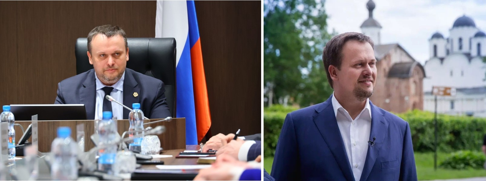

Мэр Великого Новгорода • Розбаум Александр Рихардович
Приемная мэра: телефон (8162) 983-401, факс (8162) 732-599 E-Mail: mayor@adm.nov.ru
Александр Розбаум родился 30 ноября 1968 года в городе Калинин Калининской области. В 1990 году окончил Симферопольское высшее военно-политическое строительное училище.
В 2004 году – Санкт-Петербургский университет МВД России (юриспруденция).
В 2011 – 2013 годах – председатель Комитета по управлению муниципальным имуществом (КУМИ), заместитель главы администрации Великого Новгорода. С февраля 2014 года назначен руководителем Государственной инспекции труда в Новгородской области – Главным государственным инспектором труда в Новгородской области.
С 1986 года по 1994 служба в Вооруженных Силах СССР, РФ.
С 1986 года по 1994 служба в органах внутренних дел, УВД Новгородской области.
С 1996 года по 2008 служба в таможенных органах, Подполковник таможенной службы.
С 2008 года по 2011 — заместитель директора МУП «Новгородский водоканал».
С 2008 года по 2011 — председатель Комитета по управлению муниципальным имуществом Великого Новгорода.
С 2012 года по 2013 — заместитель Главы Администрации Великого Новгорода.
В 2014—2018 годах — руководитель Государственной инспекции труда — главный государственный инспектор труда в Новгородской области, ВрИО Руководителя Государственной инспекции труда в Калининградской области.
С 2018 года — Глава Старорусского муниципального района.
23 сентября 2022 года на очередном заседании Думы Великого Новгорода, на основании решения конкурсной комиссии по отбору кандидатур на должность Главы городского округа Великий Новгород, избран на должность мэра Великого Новгорода. Дата вступления в полномочия — 10 октября 2022 года.
Губернатор Новгородской области • Андрей Сергеевич Никитин
Приемная губернатора: телефон 8 (8162) 73-22-87 E-Mail: kanc@novreg.ru
Андрей Сергеевич Никитин родился в Москве в 1979 году.
В 2001 - окончил Государственный университет управления.
C 2002 по 2011 год работал в группе компаний «РУСКОМПОЗИТ», объединяющей крупнейшие предприятия России на рынках стекловолокна, композитов и геосинтетических материалов.
С 2009 года — генеральный директор управляющей компании «РУСКОМПОЗИТ».
С 27.07.2011 работал в должности генерального директора АНО «Агентство стратегических инициатив по продвижению новых проектов».
13.02.2017 Указом Президента Российской Федерации назначен временно исполняющим обязанности Губернатора Новгородской области. По результатам выборов 10.09.2017 избран Главой региона.
14.10.2017 вступил в должность Губернатора Новгородской области.
Член Государственного совета Российской Федерации.
Председатель комиссии Государственного совета Российской Федерации по направлению «Социальная политика».
Входит в состав комиссии Государственного совета Российской Федерации по координации и оценке эффективности деятельности органов исполнительной власти субъектов Российской Федерации и в состав комиссии Государственного совета Российской Федерации по направлению «Государственное и муниципальное управление».
Член Наблюдательного совета Агентства стратегических инициатив по продвижению новых проектов.
Входит в состав Комиссии Российской Федерации по делам ЮНЕСКО.
Награжден медалью ордена «За заслуги перед Отечеством» I, II степеней (2020 г., 2015 г.).
Имеет Благодарность Президента Российской Федерации (2014 г.)
Доктор экономических наук (2018 г).